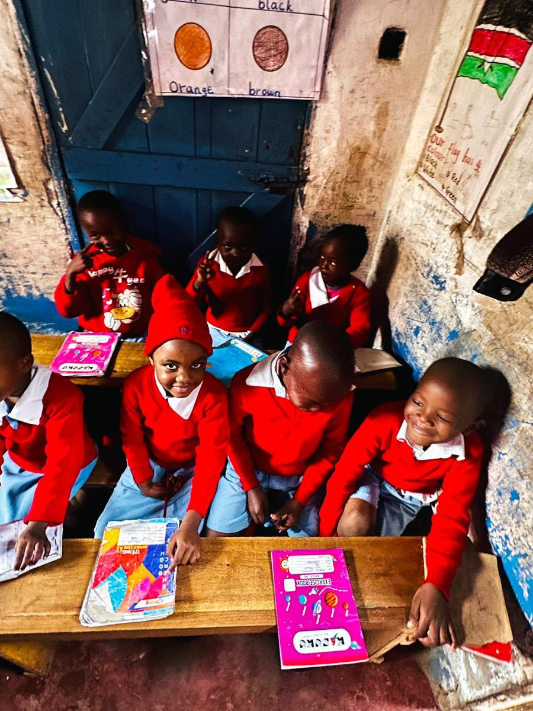
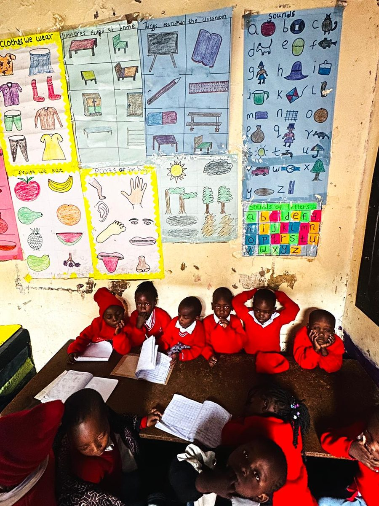
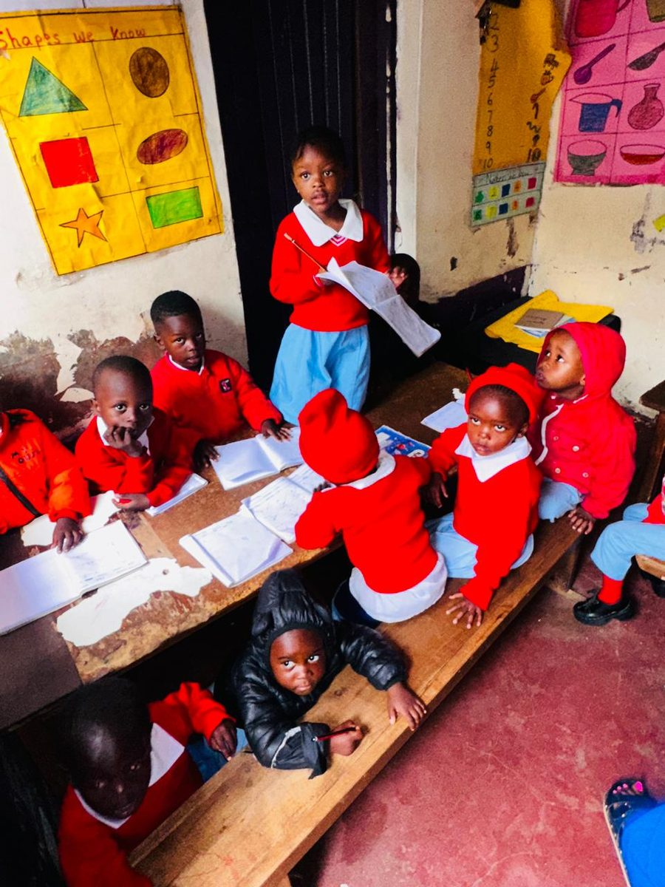
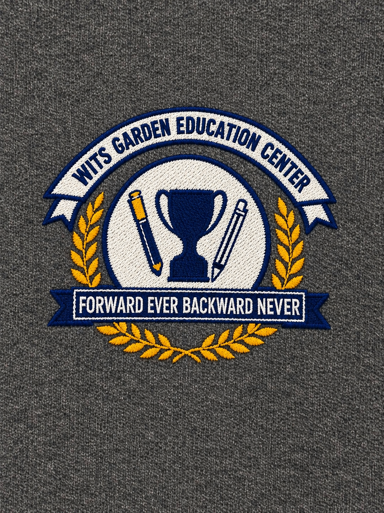

Dandora Phase 5, Nairobi
Affordable, quality learning for every child in our community
Play Group through Grade 8, plus French — Wits Garden Educational Centre gives children in Dandora a safe, structured place to think critically, dream creatively and innovate boldly.

Why families choose us
Rooted in Dandora, built for our children's future
Affordable quality education
We bridge the gap for families who can't afford premium private school fees, so every child gets an empowering foundation — not just those who can pay for it.
Safe, structured environment
In a busy urban neighborhood, a safe learning space matters. Children spend their day in a protective setting focused on real value-addition and social skills.
Future leaders, not just learners
Living out "Forward ever, backward never," we nurture hidden talent and help break the cycle of poverty — so our learners can one day give back to Dandora.
Our vision & mission
What we're working toward
Vision: To empower learners, think critically, dream creatively and innovate boldly.
Mission: Providing affordable, quality learning opportunities for children in marginalized urban communities.
Every lesson, every interaction and every decision at Wits Garden is measured against these five values:

See us in action
A glimpse of school life
Real classroom moments, learning displays and videos from Wits Garden — see the full gallery on our School life page.


Ready to give your child a strong foundation?
Come see the classrooms for yourself, ask about enrollment, or find out how you can support a learner.